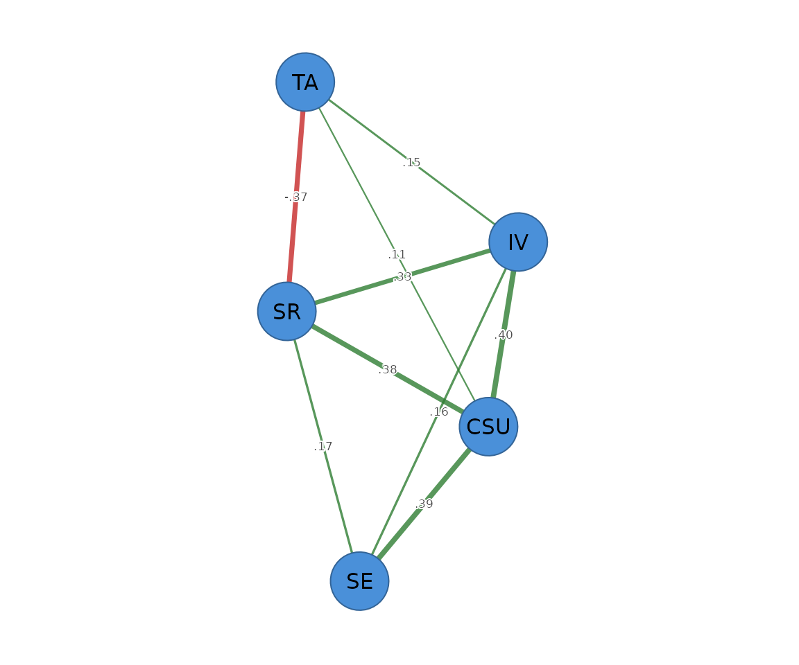

Information-filtering networks: TMFG and LoGo
Source:vignettes/information-filtering-networks.Rmd
information-filtering-networks.RmdInformation-filtering networks take a different route to sparsity than the graphical lasso. Instead of penalising edges, they keep a fixed, theoretically motivated topology and let the data fill in the weights.
-
TMFG (Triangulated Maximally Filtered Graph,
method = "tmfg") greedily builds a planar, chordal graph with exactly3(p - 2)edges – the strongest associations that still form a triangulated structure. -
LoGo (Local-Global,
method = "logo") takes the TMFG topology and returns the closed-form sparse inverse covariance (a partial-correlation network) for that chordal graph – no iteration, no tuning.
Both are deterministic and dependency-free, and both carry a structural certificate.
tmfg <- psychnet(SRL_GPT, method = "tmfg")
logo <- psychnet(SRL_GPT, method = "logo")
tmfg
#> <psychnet> tmfg network
#> nodes: 5 edges: 9 (undirected)
logo
#> <psychnet> logo network
#> nodes: 5 edges: 9 (undirected)
#> optimality (KKT residual): 6.66e-16With only five nodes the filter is mild (a 5-node graph has 10
possible edges and TMFG keeps 3(5 - 2) = 9); the method
shows its value on larger node sets, where it drops the great majority
of edges. The TMFG certificate confirms the graph has the correct edge
count and is chordal and connected:
certificate(tmfg)
#> method certificate kind certified
#> 1 tmfg 0 structural TRUEThe LoGo edges are the partial correlations on the TMFG backbone:
as.data.frame(logo)
#> from to weight
#> 1 CSU IV 0.4035714
#> 2 CSU SE 0.3934966
#> 3 IV SE 0.1648976
#> 4 CSU SR 0.3771675
#> 5 IV SR 0.3300708
#> 6 SE SR 0.1681288
#> 7 CSU TA 0.1100782
#> 8 IV TA 0.1463203
#> 9 SR TA -0.3720398Plotting
LoGo weights the TMFG backbone with partial correlations. Pass the
network object to cograph::splot() with
psych_styling = TRUE (spring layout, green = positive, red
= negative); ask for the predictability ring with
predictability = TRUE.
cograph::splot(logo, psych_styling = TRUE, predictability = TRUE)
LoGo reproduces the sample correlation exactly on the TMFG support (its defining property), so its constrained-MLE certificate is near zero:
certificate(logo)
#> method certificate kind certified
#> 1 logo 6.661338e-16 kkt TRUE